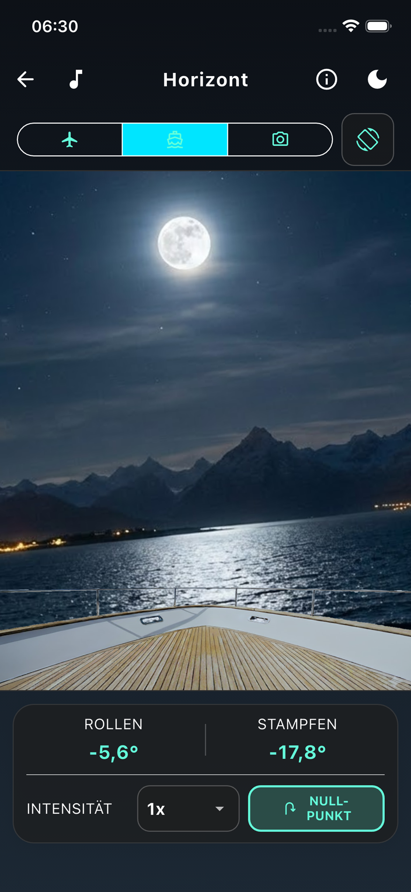
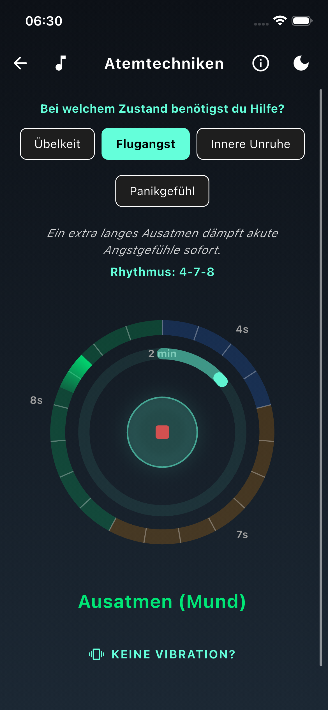
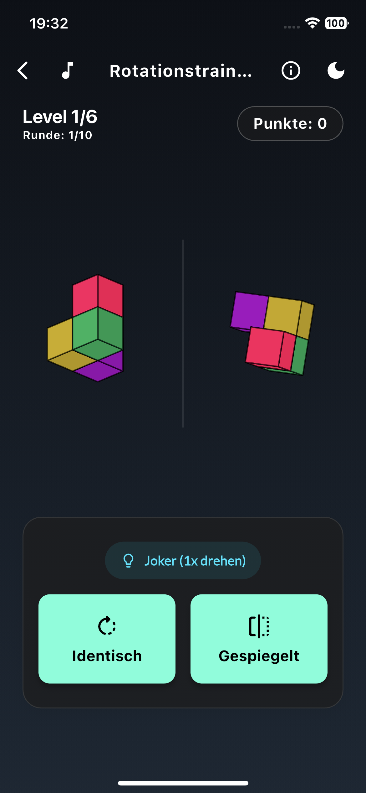

Soforthilfe bei Seekrankheit
Der künstliche Horizont
Seekrankheit entsteht durch einen sensorischen Konflikt: Das Auge meldet Stillstand – zum Beispiel in der fensterlosen Innenkabine eines Schiffes – während das Gleichgewichtsorgan gleichzeitig die Bewegung spürt. Manche Schiffsreisende behelfen sich unter Deck bisher mit einer halb gefüllten Wasserflasche auf dem Tisch, um die Schiffsbewegung für das Auge wieder sichtbar zu machen. Der künstliche Horizont in der App ist quasi die moderne, digitale Übersetzung dieses Prinzips direkt auf dem Display. Er gleicht den Konflikt sanft aus, indem er die echte Bewegung synchron sichtbar macht. Nutze diese Methode idealerweise auf dem Schiff unter Deck.
Warum das hilft: Die Darstellung einer erdbezogenen Linie liefert dem Gehirn die fehlenden visuellen Bewegungsinformationen zurück. Auf dem Bildschirm siehst du den Bug eines Schiffes und das Meer mit einer Bergkette am Horizont. Während der Bug starr bleibt, neigt sich das Hintergrundbild basierend auf den Sensordaten deines Smartphones exakt synchron zu den tatsächlichen Schwankungen. Dein Gehirn erhält so die fehlende visuelle Bestätigung der Bewegung zurück, was das flaue Gefühl im Magen sanft lindert.
Artikel lesen
Wissenschaftlicher Hintergrund & Quellen
Hintergrund: Die Darstellung einer erdbezogenen Linie liefert dem Gehirn die fehlenden visuellen Bewegungsinformationen (Inertial Cues). Dies löst den sensorischen Konflikt auf und verhindert die Fehlermeldung im Gehirn, die zu Reiseunwohlsein führt.
Quelle: Bos, J. E., et al. (2005/2012). TNO Human Factors / Vrije Universiteit.

Beruhigung bei Flugangst & Stress
4-2-6 Taktatmung
Finde dein inneres Gleichgewicht wieder. Wende die Taktatmung an, wenn du im Flieger oder Bus dringend einen Anker brauchst. Sie ist eine ideale Begleitung bei Reiseübelkeit und aufsteigender Flugangst, da sie dein Wohlbefinden sofort unterstützt. Haptische Signale führen dich dabei völlig blind durch den Rhythmus: 4 Sekunden einatmen, 2 Sekunden halten, 6 Sekunden ausatmen.
Warum das hilft: Die bewusste und verlängerte Ausatmung aktiviert gezielt den Ruhe-Nerv deines Körpers. Das signalisiert dem Gehirn Sicherheit, fährt akute Stressreaktionen sowie Panikgefühle sanft herunter und dämpft den Brechreiz spürbar.
Wissenschaftlicher Hintergrund & Quellen
Hintergrund: Kontrollierte, verlangsamte Atmung (Paced Breathing) stimuliert den Vagusnerv und erhöht die Herzfrequenzvariabilität (HRV). Dies dämpft die körperliche Erregung (Arousal) erheblich und hat sich in Studien zur Begleitung bei unruhigem Reisen sowie in Stresssituationen bewährt.
Quelle: Yen Pik Sang et al. (2003); Stromberg et al. (2015); Zaccaro et al. (2018) zur Angstregulation.

Präventives Training für die Reise
Mentale Rotation
Bereite dich schon Wochen vor dem Urlaub vor, damit die Fahrt ans Ziel entspannt beginnt. Ein trainiertes räumliches Vorstellungsvermögen hilft dem Gehirn, Raum- und Bewegungsdaten auf der Reise effizienter zu verarbeiten. WICHTIG: Dies ist ein reines Präventions-Training. Übe täglich für etwa 15 Minuten in Ruhe vor der Reise. Die Anwendung: Entscheide im interaktiven Spiel, ob die rechte 3D-Figur identisch (nur gedreht) oder gespiegelt ist. Du hast einen Joker pro Level.
Warum das hilft: Ein solches räumliches Sehtraining schult das Gehirn darin, widersprüchliche Signale und Bewegungen viel schneller aufzulösen. Das kann die individuelle Anfälligkeit für Reiseunwohlsein im Vorfeld deutlich senken.
Wissenschaftlicher Hintergrund & Quellen
Hintergrund: Forschungen der University of Warwick (2021) zeigten, dass ein zweiwöchiges räumliches Sehtraining (visuospatiales Training) die Anfälligkeit für Reiseunwohlsein um über 50% reduzieren kann. Ein trainiertes räumliches Vorstellungsvermögen hilft dem Gehirn, Bewegungsdaten effizienter zu verarbeiten.
Quelle: Smyth, J. et al. (2021). University of Warwick / Applied Ergonomics.
